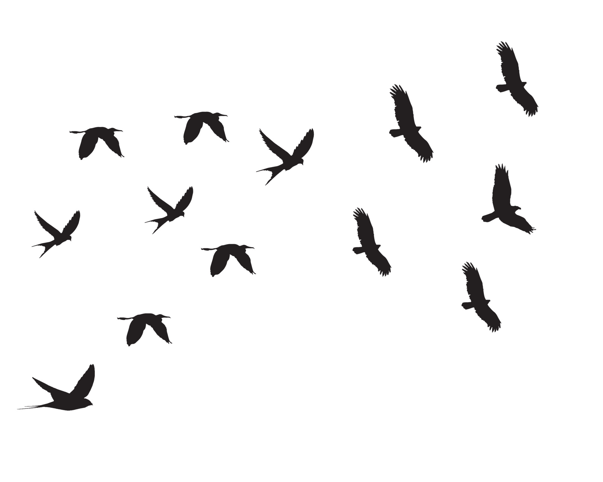

DAWN TO DUSK
Resources
- Documentation of Web gl : The WebGL documentation was like our project's roadmap, showing us how to create cool graphics on the web. It explained things clearly and showed us examples that helped us understand better. Because of it, we could make our visuals really awesome and interactive. Basically, it was our go-to guide for making our web project look amazing!
- Youtube Video : This YouTube Playlist provide us another huge help for our project. They provided step-by-step tutorials and demonstrations that made learning easier. Watching these videos gave us practical insights and solutions to various challenges we encountered.
Source Of Inspiration
- The idea for creating a landscape is inspired by nature and the beauty of natural landscapes.
- One evening, as the sun begins to set and birds are flying in the sky, we notice how the colors of the sky change, creating a stunning display of light and shadow.
- This experience of witnessing the beauty of nature throughout the day inspires us to create an animation that captures these moments, showcasing the natural beauty of the world around us.
- Nature is always changing, and each moment is unique and beautiful. We want to capture these fleeting moments and share them with others.
Challenges
Flapping Bird Wings:
- Implementing realistic bird animations, including the flapping of wings, posed a significant technical challenge.
- This involved creating a smooth and natural-looking animation sequence that synced with the bird's flight trajectory.
- Designing a dynamic animation system that accurately simulates the movement of bird wings based on factors such as wind speed, altitude, and wing morphology.
- Developing algorithms for interpolating between keyframes to achieve smooth and fluid motion.
- Ensuring that the animation remains responsive to user input or environmental changes.
- Optimizing the animation code to maintain consistent frame rates across different devices and screen resolutions was also crucial.
Key aspects of this challenge included:-
Setting Coordinates for Different Objects:
- Positioning and aligning various objects within the WebGL scene presented its own set of challenges.
- This aspect required careful consideration of spatial coordinates and transformations, including understanding and working with different coordinate systems, such as world space, local space, and screen space.
- The goal was to accurately position objects relative to each other.
- Managing the hierarchical relationship between different objects in the scene was essential to ensure proper placement and alignment. This included mountains, birds, and the sun.
- Additionally, implementing dynamic object placement and movement added complexity. For example, randomizing the positions of sun or birds within predefined regions of the scene while maintaining coherence and avoiding collisions.
Sky Color Transitions
- Simulating the changing colors of the sky during sunset posed one of our biggest challenges in the project
- This aspect required careful consideration of spatial coordinates and transformations, including understanding and working with different coordinate systems, such as world space, local space, and screen space.
- We had to figure out how to blend colors smoothly, going from warm oranges to deep purples.
Overcoming
Precise Object Placement
- Manage coordinate systems effectively to accurately position objects within the scene.
- Create dynamic placement algorithms considering environmental constraints and user interactions.
- Iterate through testing and refinement at each step.
Hit and Trial
- Experiment with different animation parameters randomly.
- Made adjustments accordingly to get the best scene possible.
- Utilize a trial-and-error approach to refine the project's visual fidelity and performance.
Fine tunning
- We had to experiment with different color gradients and lighting effects to capture the natural transitions accurately.
- Fine-tuning the balance between realism and performance was crucial to achieve a visually stunning sunset scene
Assets

Mountains
Mountains are like giant piles of rocks that reach really high into the sky. They're big, tall landforms with steep sides, often covered in snow at the top.

Sun
The sun is a bright, glowing ball of gas that provides light and warmth to our planet. It's the center of our solar system and the source of energy for all life on Earth.

Flying Birds
Birds fly high in the sky, flapping their wings to glide through the air with ease, bringing beauty to the heavens with their graceful dance.